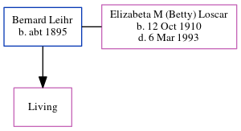

Bernard Leihr c1895 -
[ Home ] | [ Calendar ] | [ Surnames Index ] | [ Census Index ] | [ Family History ]Bernard Leihr, the husband of Elizabeta M (Betty) Loscar (the great-aunt of Michele Copp (née Phillips)), was born in Pennsylvania c. 18951. He had 1 child, Elizabeth. In 1930, he was living in Pittsburgh, Allegheny, Pennsylvania, USA1.
Citations
- 1930 United States Federal Census Online publication - Provo, UT, USA: MyFamily.com, Inc., 2002.Original data - United States of America, Bureau of the Census. Fifteenth Census of the United States, 1930. Washington, D.C.: National Archives and Records Administration, 1930. T626, 2,667 rol (Marital Status: Married; Relation to Head: Head)
Family Tree
Generated by ged2site. Last updated on Jun 6, 2024